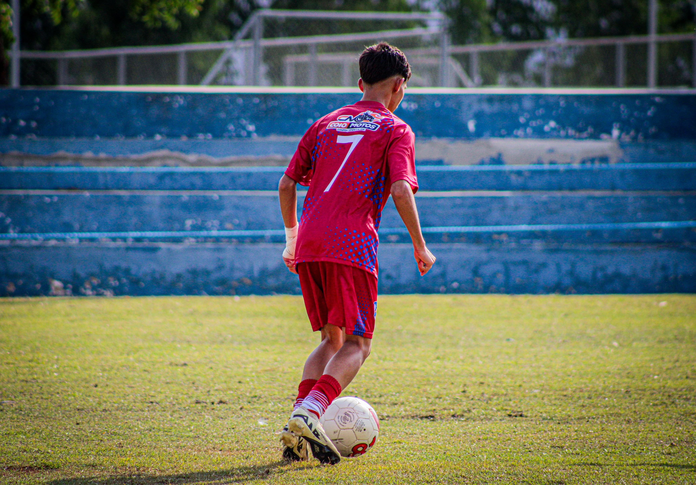

Olá, me chamo Francisco Sebastião
Sobre o Autor
Nasci em São Miguel do Tapuio cidade bastante bonita e rica em cultura, gosto de jogar bola nos tempos livre e estudar, gosto bastante de ir as missa nos domingos e passear com minha familia.
Minha terra, meu lugar.
Autor: Francisco Sebastião